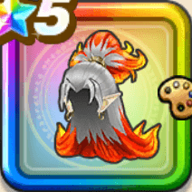

鍛冶師の髪結い
攻略班 9.5点 / エレメント系への耐性+5%物質系への耐性+5%エレメント系への耐性+5%物質系への耐性+5%スキルの体技ダメージ+8%【夜間】ジバリア属性斬撃・体技ダメージ+2%【朝/昼/夕】ギラ属性斬撃・体技ダメージ+2%ジバリア属性斬撃・体技ダメージ+8%ギラ属性斬撃・体技ダメージ+7%
くわしい特徴
【レベル別習得スキル】 Lv1エレメント系への耐性+5% Lv5物質系への耐性+5% Lv8スキルの体技ダメージ+8% Lv10【夜間】ジバリア属性斬撃・体技ダメージ+2% Lv10【朝/昼/夕】ギラ属性斬撃・体技ダメージ+2% Lv15ジバリア属性斬撃・体技ダメージ+8% Lv15ギラ属性斬撃・体技ダメージ+7% Lv18エレメント系への耐性+5% Lv20すばやさ+7 Lv23物質系への耐性+5% Lv25さいだいHP+5 【限界突破スキル】 1凸攻撃力+12 2凸すばやさ+12 3凸守備力+12 4凸さいだいHP+12